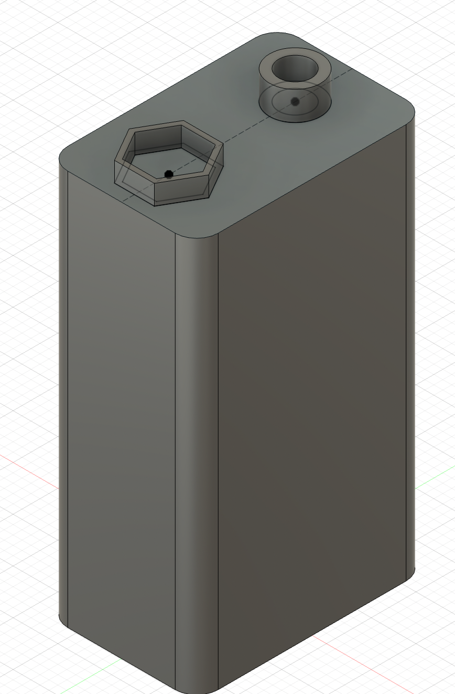

During lab this week, I learned how to use the vinyl cutter to make stickers. First, I had to pick the image that I wanted to create. I have always loved sharks, and so it was an easy decision to decide to create a shark. I found an image online of a Danger: Shark Crossing road sign which included images of a few sharks. My original goal was to print out this whole sign on yellow vinyl with the text and sharks as cutouts. However, I accidentally set the size of my image to be too large, and therefore it did not fit on the piece of vinyl I had inserted into the cutter. Nevertheless, one of the shark cutouts came out properly, and so I decided to accept that as my final product instead. I put it onto my water bottle, as shown below.
From this experience, I learned the importance of properly measuring out the size of the image you are printing relative to the amount of material that you have placed into the vinyl cutter. I also learned how to use Inkscape to manipulate images (for example, I took my picture as a color image off the internet and had to turn it into a black-and-white PNG image). While the vinyl cutter was different to use than the laser cutter, I was impressed by how precisely they are both able to cut, and how quickly they can turn an image on my computer into a physical object in my hand. This was exciting, and I hope to make more stickers in the future as well as take advantage of the many different other functions of the vinyl cutter (and potentially learn how to use the screen press to create shirts as well).
Inspired by past creations I saw in the lab, I decided to make a kit consisting of many small puzzle pieces that could be linked together in different ways to create different structures. I envisioned my piece as a circle with 4 rounded pieces cut out of it, each cutout piece also a portion of a circle. In between the circles, I decided to put rectangular notches. I've included the sketch, as well as the fully extruded image, below.

This was my first time ever using any sort of CAD software, so there was definitely a learning curve. For example, I didn't realize that the lines of my sketch should turn black to indicate that they've been properly set into place. I learned many different functions, such as how to Set Dimensions, draw construction lines, and use the circular pattern feature so that I didn't have to draw the same shapes 4 times around my circle. I also learned the importance of sketching centered on the origin, since this makes everything else easier. Unfortunately, I underestimated the amount of kerf that would be present, and so the first time I printed this (with notch width at 4.75 mm), the pieces did not fit together well and would fall apart as soon as I had put them together. I tried to measure the amount of gap in between two interlocking pieces using calipers and adjust the width that way. However, it was hard to fit the calipers in between the pieces to properly measure, and I ended up having to print two more iterations before they fit together perfectly (the correct notch width was 4.15 mm). Another problem I encountered with the first iteration was that the notches were too deep (in that they intruded too much towards the center of the piece), and so I couldn't actually use all four notches at once because the pieces would end up bumping into each other and blocking the rest from being inserted. Therefore I shortened the notch depth, and this allowed for much more freedom in how to assemble the pieces. Once I was happy with the way they fit together, I printed 18 pieces and used them to assemble various shapes. My favorites were a tower, a pencil holder, and a seahorse-like creature (all shown below).

By the end of this exercise, I felt a lot more comfortable with Fusion and decided to try my hand at making a finger joint box. I found a tutorial online and followed along to create the sketch below. This taught me several important skills (which I ended up using a lot while modeling my household objects). For example, in order to draw the notches, I drew three rectangles coinciding with the edge of the base, not worrying about their relative sizes or placement. Then, I drew construction lines in between the rectangles and used the Equal function to make them equal. I then set the widths and heights of the rectangles to the same values as each other. With these parameters, I was able to create three equally sized and equally spaced notches. I also learned how to use "Create Component", how to use the extrude function in different ways, and how to use Mirror. Another interesting thing was that after creating the base and the two long sides, the tutorial taught me how to essentially fill in the space between these pieces to create the short side, rather than making it from scratch.
Thus, making this box was a very useful exercise in terms of increasing familiarity with Fusion. However, I ran into some problems when trying to laser cut it. First of all, I wanted to make my box out of wood but forgot to change the material of the laser cutter from matboard to wood, so it didn't end up cutting all the way through the first time. After I fixed this, I tried to shrink the dimensions of my box by using the Scale feature in Rhino before printing to UCP. This ended up causing some issues where the notches of the base were no longer deep enough, and so the sides of the box stick out a bit. I realize now that this is because while the notches were scaled down proportionally, the physical width of the wood material obviously did not change, making the sides of the box too thick for the notches of the base. Additionally, I had trouble properly accounting for kerf, so the box does not fit together tightly and I will probably have to use glue to hold it together. Nevertheless, I am happy with how it turned out, and eager to try again later.
I followed this tutorial to learn how to make a bolt. This taught me several useful skills that I employed later on when modeling my household objects. For example, I learned how it is possible to extrude one shape through another shape (in this case, extruding a circle through the hexagonal head of the bolt, thus making a cylinder that serves as the stem of the bolt). I also learned how to add thread to objects and how to modify this thread, a skill I used to create the test tube cap in my own models. Additionally, I learned how to create the diagonal face on the edges of the hexagonal head of the screw, by drawing a triangle on the corner of each face and then using the Revolve function to shear this triangle off each face of the hexagon. Lastly, this tutorial taught me how to change the material of my finished object, so I decided to change my bolt to solid gold just for fun. Here is a picture of my completed bolt.
For my first object, I decided to model a Falcon tube I found in my lab. Here are the parameters I found by using the calipers to measure different dimensions of the tube:
I made the body of the tube by creating a ring with outer diameter and inner diameter, then extruding it to the height of the tube body. This created a hollow cylinder (I also could have used the shell function for this). Then I added the base of the tube by putting a circle at the bottom and extruding it to the thickness of the tube walls. Next, I added the cap. I did this by first creating another hollow cylinder with outer diameter equal to the outer diameter of the cap, and inner diameter equal to the inner diameter of the cap. I added thread to the inside of this cylinder. Then I put the top on the cap using the same method I used to add a bottom base for the tube. I put the finishing touches on my object by changing the material of the tube to be clear acrylic and the material of the cap to be opaque plastic. Here is a picture of my model alongside its real life counterpart. Also shown is one of my caliper measurements.
For my second object, I modeled a battery. Here are the parameters I obtained with the calipers:
Some of the dimensions were difficult to measure because they were so small or tightly packed together that it was hard to get the calipers properly situated. Nevertheless, I did the best I could. I made the body of the battery by creating a rectangle, filleting the corners, and extruding upwards to the height of the battery. Then I created the cylindrical and hexagonal protrusions as separate components. I made the cylinder by creating an outer diameter and an inner diameter, then extruding the ring upwards. I made the hexagon by creating a hexagon inscribed in a circle with diameter equal to the diameter I measured for the hexagon. I then made another inscribed hexagon inside of this bigger one, but this time its diameter was the inner diameter of the hexagon. Thus, I created a shell of hexagonal shape. I lined up the cylinder and the hexagon on a midline construction line. Shown below is my creation.
That is all for this week! There are many more things I want to try to make with the laser cutter, and I look forward to having more time to play around and create things!